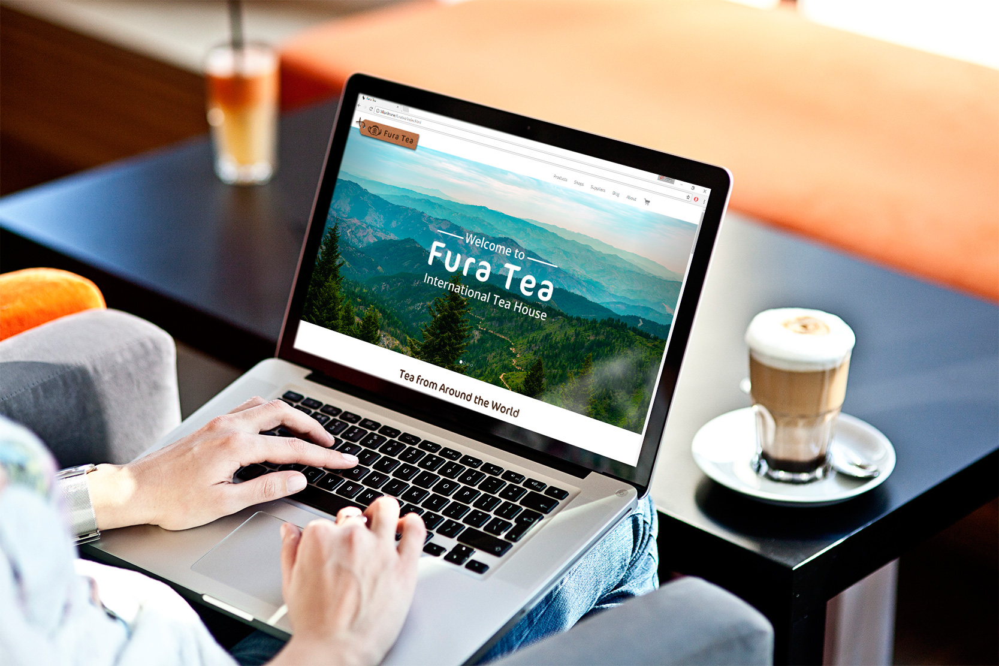
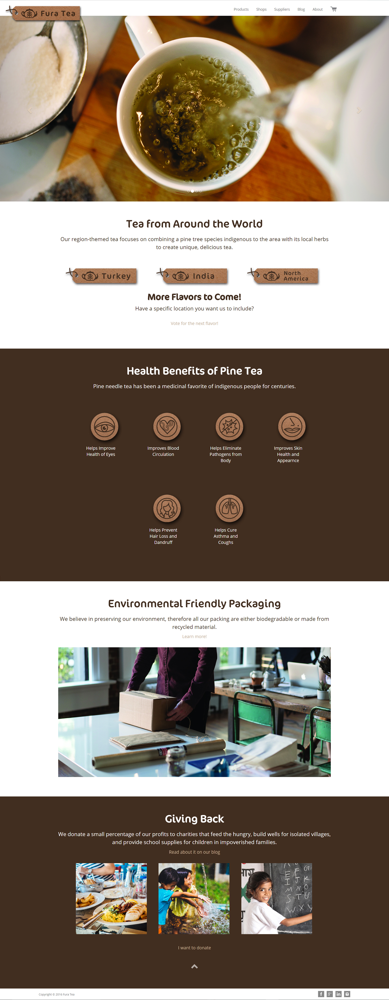

Fura Tea Website
Fura Tea is a 4 week team project focusing on brand and web design and development from scratch. The logo infuses a teapot and a pine tree to reflect the main ingredient of the Fura Tea. The brand focuses on organic, healthy, and environmental-friendly values, which can be seen in its visual design of earthy colors and cardboard packaging.
Demo

